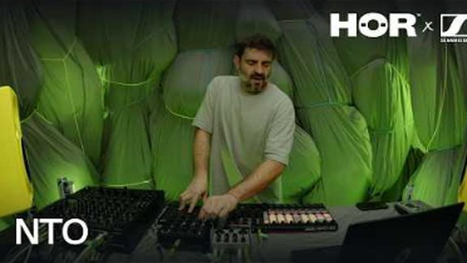

Every free electronic DJ set on YouTube, in one place.
Full-length sets from festivals, clubs and one-off locations, sorted by genre, DJ and venue. Free to watch, no sign-up.

Featured artistNTO14 full live sets, 2013–2026 · Cercle, HÖR, festivals
See all sets →
Prototype: built from Giuseppe's 10 most recently watched DJ sets, plus the full NTO catalogue found on YouTube. Every video was checked as public and embeddable on 11 Nov 2026. One click on any set starts it on YouTube. On the live site, that same click will play it right here on the page.
Ad slot · 728×90 leaderboard